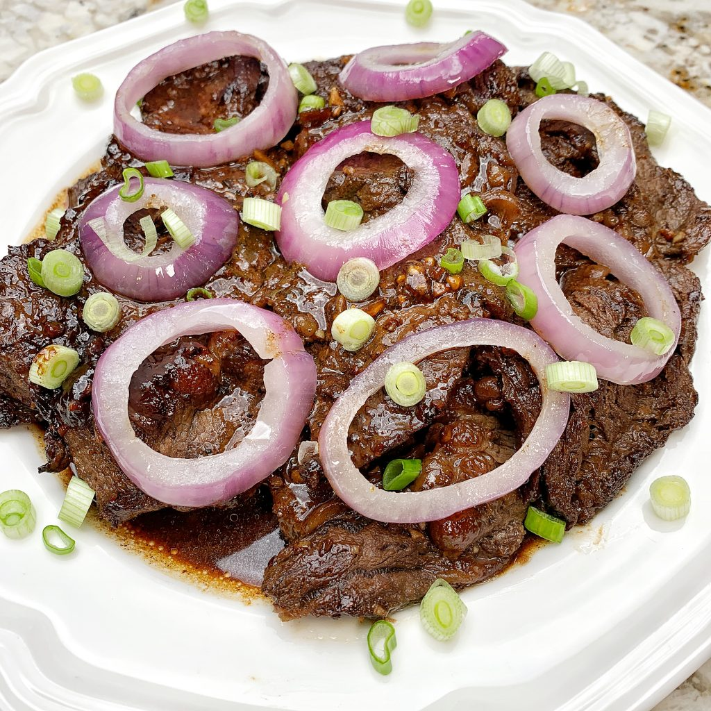

Bistek (Filipino Beef Steak)

Bistek Tagalog is a type of Filipino beef stew.
This is also known as Beefsteak to some people.
It is compromised of thin slices of beef and a generous
amount of onions. These are stewed in a soy sauce and lemon juice
mixture until the beef gets very tender.
Ingredients:
- ½ cup soy sauce (such as Kikkoman®)
- ¼ cup lime juice
- 3 cloves garlic, smashed
- 2 teaspoons white sugar
- 1 teaspoon fish sauce (Optional)
- ground black pepper to taste
- 1 pound beef steak, sliced 1/4-inch thick
- 2 tablespoons vegetable oil, divided, or as needed
- 1 large onion, cut into rings
- 4 potatoes, cut into wedges (Optional)
- ⅛ cup water (Optional)
Directions:
- Combine soy sauce, lime juice, garlic, sugar, fish sauce, and pepper in a bowl.
Add sliced beef, making sure it is coated evenly.
Marinate for at least 30 minutes or up to 1 hour.
- Heat 1 tablespoon oil in a wok or pan over medium-high heat.
Fry potatoes in the hot oil until the edges turn golden brown, 7 to 10 minutes.
Transfer to a plate.
- Heat remaining oil in the same pan over medium-high heat and fry onions until edges turn brown,
7 to 10 minutes. Transfer to the same plate.
- Reserve marinade and fry beef in batches, adding more vegetable oil if necessary,
until browned and no longer pink in the centers, 5 to 7 minutes. Transfer to the plate and continue with remaining beef.
- Pour the reserved marinade into the pan with water to deglaze, Return beef back to the pan with some onion, leaving remaining onion for garnish; reduce heat and let simmer until sauce has thickened, 7 to 10 minutes.
- Slide beef and sauce onto a serving plate. Garnish with remaining onion. Place potatoes on the side and serve.
Return to main page